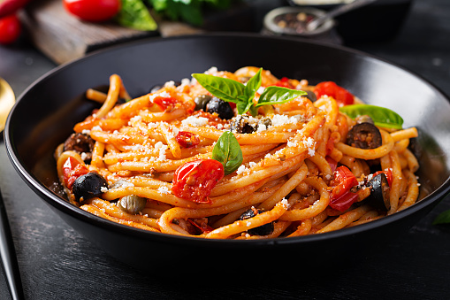

Spaghetti

Description
Savor the simplicity of our spaghetti: al dente pasta embraced by a rich, savory tomato sauce, sprinkled with grated Parmesan.
This timeless dish offers a quick and comforting dining experience, perfect for any occasion.
Ingridents:
- Spaghetti
- Olive oil
- Garlic (minced)
- Crushed tomatoes
- Fresh basil
- Grated Parmesan cheese
Recipe:
- Boil spaghetti until al dente according to package instructions.
- In a pan, heat olive oil and sauté minced garlic until fragrant.
- Add crushed tomatoes to the pan and simmer the sauce for about 10 minutes.
- Toss the cooked spaghetti in the flavorful tomato sauce until well coated.
- Garnish with fresh basil.
- Sprinkle generously with grated Parmesan cheese.
- Serve and enjoy your quick and delicious spaghetti!